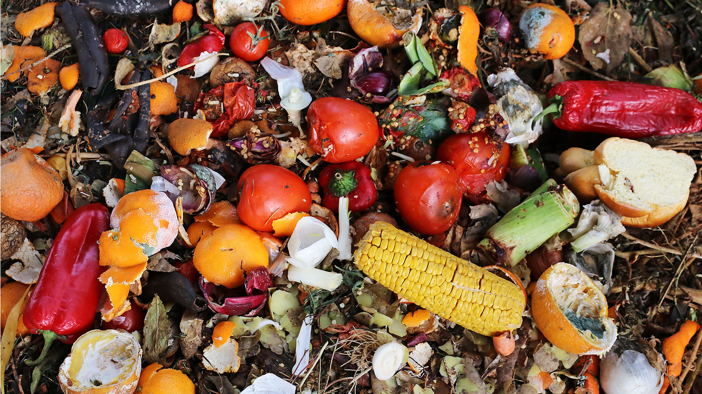
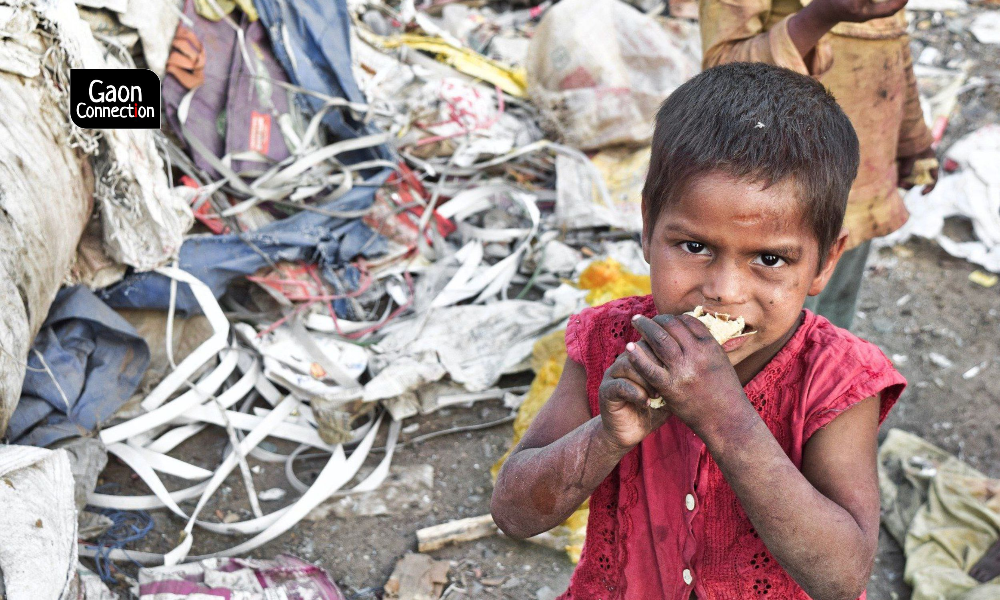

Food Waste Management

Food waste management is a critical aspect of sustainable and responsible resource utilization. It involves the processes and strategies employed to reduce, recover, and recycle food waste generated at various stages of the food supply chain. Proper food waste management is essential for environmental conservation, economic efficiency, and addressing global issues such as hunger and resource depletion.
Here are key components of food waste management:
Preventation:
Education and Awareness:
Educating individuals, businesses, and communities about the impact of food waste and promoting responsible consumption can help prevent it at the source.Meal Planning:
Encouraging meal planning and smart shopping to minimize over-purchasing and impulse buying.

Reduction:
Portion Control:
Encouraging portion control in restaurants and at home to reduce plate waste.Food Labels and Packaging:
Improving food labeling and packaging to extend product shelf life and reduce spoilage.
Recovery:
Food Rescue and Redistribution:
Establishing networks to collect surplus, edible food and redistribute it to those in need.Food Banks:
Supporting and promoting the work of food banks and charitable organizations that collect, store, and distribute surplus food.
Recycle:
Composting:
Turning food waste into compost, which can be used to enrich soil and improve agricultural productivity.Anaerobic Digestion:
Utilizing anaerobic digestion systems to convert organic waste into biogas and nutrient-rich digestate.
Legislation and Policies:
Waste Regulations:
Implementing and enforcing regulations that address food waste management at various stages of the supply chain.Tax Incentives:
Offering tax incentives to businesses that actively participate in food waste reduction and recycling initiatives.
Technology and Innovation:
Smart Technologies:
Employing technologies such as sensors, data analytics, and artificial intelligence to optimize supply chain processes, reduce spoilage, and enhance efficiency.Biotechnology:
Exploring innovative solutions, such as using microbes to break down food waste more efficiently.
Collaboration:
Supply Chain Collaboration:
Fostering collaboration among different stakeholders in the food supply chain, including farmers, manufacturers, retailers, and consumers.International Cooperation:
Encouraging global cooperation to address food waste on a larger scale.